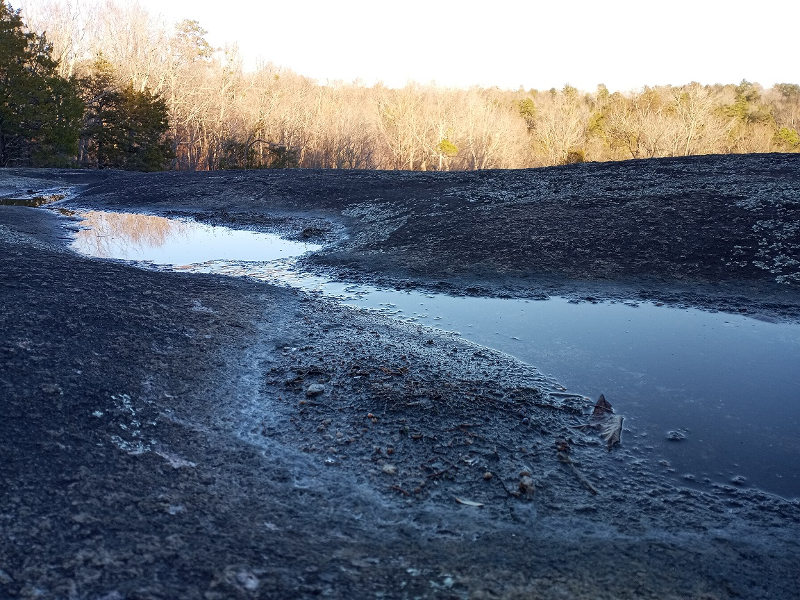

Finally, I would like to touch on some other things I saw while out there, and wht I think they are memorable things worth seeing.
This tree stood out to me, because although the rock was surrounded by trees on the perimeter, this tree decided to brave the adversity and grow on the stone. I don't know if it's considered cheesy (...treesy) to be inspired by a tree, but I was impressed by the determination to continue living.
The stream, it feels like both a constant and a fleeting thing to me, so I found it interesting. The only source for the water up on the rocks to pool and flow is from the rain. But rain always comes eventually, and the erosion in the rocks meant for that water was fun to see.
I probably shouldn't try to pull too much meaning out of this, at the risk of sounding pretentious. But seeing these things on my hike (that was totally on Wednesday), meant a lot to me personally.